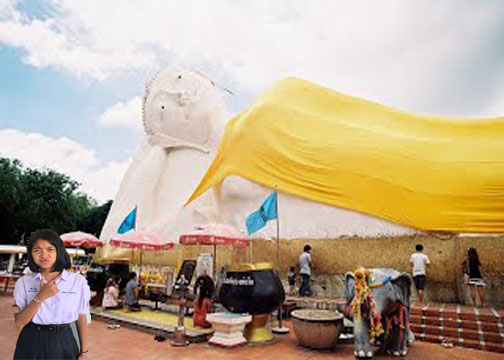

สถานที่ท่องเที่ยว
วัดสะตือ ตั้งอยู่เลขที่ ๑๔๐ บ้านท่างาม หมู่ที่ ๖ ตำบลท่าหลวง อำเภอท่าเรือ จังหวัดพระนครศรีอยุธยา
วัดสะตือ สร้างขึ้นเป็นวัดนับแต่ พ.ศ. ๒๔๐๐ เดิมตั้งอยู่ทางทิศเหนือขึ้นไปไม่ไกลนัก ที่เรียกว่า วัดสะตือ
แต่นั้นมาจึงเรียกตำบลว่า "ตำบลท่าหลวง" และเรียกนามวัดว่า "วัดท่าหลวง" แต่ต่อมากลับไปเรียกว่า "วัดสะตือ"
สมเด็จพระพุฒาจารย์ (โต) พรหมรังสี ได้มาดำเนินการสร้างพระพุทธไสยาสน์แล้ว วัดสะตือจึงได้ย้ายมาตั้งที่บริเวณพระนอนนี้และ เรียกนามตามชื่อตำบลว่า "วัดท่างาม"